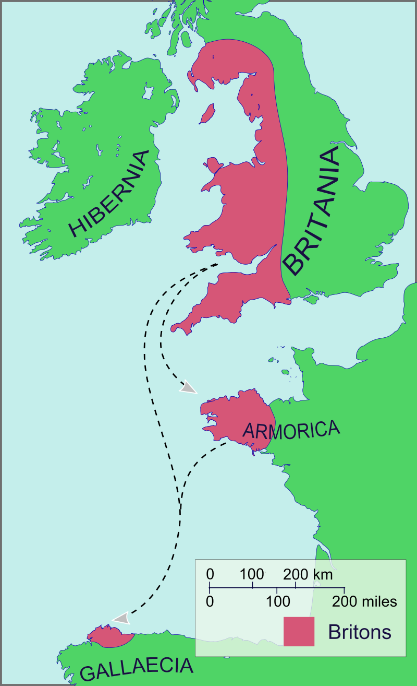
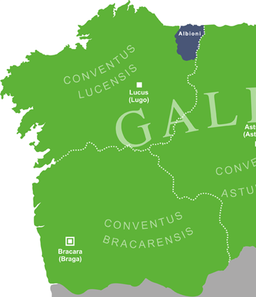
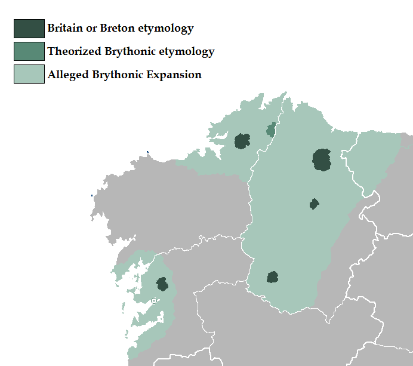

Galician Bretoña

The Galician Bretons were a group of Brythonic P-Celtic speakers that migrated to Iberia in the late 5th and 6th centuries AD. The earliest attested record we have of them is from the Parroquial Suevo (572-582AD?) where they describe a “Sedem Britonorum” made up of Bretons. There are other documents that describe such people in the 7th century aswell.
It’s not known why they settled, as the Amorican settlement in France was much closer to the British Isles and more viable for Brythonic refugees trying to escape the Anglo Saxons. Others theorize they felt more aligned with the Catholic monarchy of the Suevians, or that they even have a history of being in this area, as the Gallaecian tribe of Eo was called the “Albions”.

They first settled in Foz, Galicia, and then spread throughout Iberia. What was the settlement area? The Bretons seem to have concentrated in the northern third of the current province of Lugo, northern Corunna and western Asturias. Surely, the population settled scattered. How is it dispersed? Within the indicated area we come across a Bretoña and a Bertoña. But there are toponyms with a similar root further away: another Bretoña 20 kms north of Pontevedra and one Bertonia in the south of Lugo. Furthermore, there is a Breton near Oviedo and a Breton and Bertios in Lugo. Do all these place names refer us to the Breton colonization, or do they have a later origin, in the Middle Ages? In any case, apart from these Bret roots, there is no toponymy in the area in which we can distinguish Breton linguistic elements. On the other hand, Alonso Romero has related the "stone boats", to which the local traditions relate to the saints, with their British and Breton counterparts. In Galicia there are four: Muxía, Misarela (Pobra do Caramiñal), Padrón and San Andrés de Teixido. Only the latter is part of the area traditionally attributed to Breton colonists. Were those points where the Bretons entered? If this is the case, if we add this data to the dispersion of place names in Bret-, we might think that the Breton population was not limited only to the northern regions of Galicia. There are Bretonnic placenames in places like Pontevedra as well. They are also attested to be in Portugal, with a document from the 13th century calling Tarouca in Viseu near Northern Portugal mentioned as the Hereditas de Brethones and a “Brytto Presbyter” in Mértola, Alentejo (Southern Portugal).
The Bretons had their own bishopric in Britonia, a town identified with what is now Santa María de Bretoña (municipality of A Pastoriza, Lugo). But was this religious seat a political nucleus of the Bretons? It should not be: in Celtic-Christian History, the nucleus of political and religious power do not coincide geographically. But in this case, it is probable that there was not even a Breton “capital”, since the colonists did not constitute an autonomous political entity, that we know of. Their personality as a people revolved around the bishopric. In Castro, a fort has been found, but it is not clear that it was a settlement with a significant population in the 6th century. In the place a late medieval church is preserved, after the time we are talking about. Remains of what could be a monastic nucleus have been found in archaeological excavations, perhaps the Monastery of Máximo?
Britonia seems to have had a structure typical of Celtic churches. If the Maximo Monastery were located next to Britonia, it would not be unusual to think of the Breton Bishop as abbot. And precisely in the Celtic church, the figure of the abbot-bishop is more than widespread. A document from the 6th century (572-582?), The “Parochiale suevum” confirms the importance of Britonia and relates the bishopric to the Monastery of Máximo. The bishopric will have a gentilitic structure: it will focus on the Breton population, regardless of where they live (remember its great dispersion). However, little by little it is going to have an increasingly territorial role: the north of Galicia is going to be attached to the British headquarters, regardless of its ethnic affiliation. The Breton population located outside the northern area will be under the control of the corresponding bishopric due to its geographical location. By the middle of the 7th century, Britonia already has a fully territorial character.
To speak of Britonia is to speak of Maeloc , or Mahiloc or Mayloc, bishop mentioned in the acts of the Council of Braga II (572) "britonorum ecclesiae episcopus". His name is Breton, Maelog, and means battle, or war. Mael can also mean leader. He could probably also be the "Mailosus" mentioned in the documents of the Council of Braga I. Mailosus is mentioned as bishop but attribution is not mentioned, perhaps the settlement was recent and the bishopric itself was not yet organized? Perhaps the Celtic idea of bishop (of Britonia) and abbot (of Maximus) at the same time collided in that council? Maeloc is the first Breton bishop we know of, (and was probably the first). Traditionally, Galician historiography presents Maeloc not only as a religious but also as a political leader, but the idea is eccentric: in the Celtic world, the bishops hold religious power, but not the politician. It should be noted that in the very important Council of Toledo III (589), in which the conversion of Recaredo is celebrated, the bishop of Britonia does not participate, despite the fact that Galicia is already part of the Gothic kingdom, and that the other bishops Galicians do come, perhaps Maeloc had died, and in the absence of a substitute, the headquarters - with a structure not yet fully stabilized - was vacant?
Britonia sends bishops to Council IV of Toledo (Metopio) and Toledo VII (Sonna). In Toledo VIII (653) Sonna cannot go, but he sends a priest in his place. Surprisingly, in none of the next ten Toledo councils do we find Breton bishops, they don't even send priests to represent them. Had Britonia disappeared? No, because a Breton bishop attends the Council of Braga III (675) It should be noted that after Maeloc 's death, there are no more bishops with a Breton name (except, perhaps, Macterius and Bela, a name that some want to draw with the Welshman Belyw and Mac'h) The Breton minority and its hallmarks were evaporating. 9-The end. After the Council of Braga III, there are no more references to Britonia or the monastery of Máximo. What had happened? In some document “Britain” is still mentioned among the cities that were episcopal seats; in others it is spoken of "Vittania", but the bishopric is no longer recorded; the process of constitution of the bishopric of Mondoñedo has begun, which geographically replaces that of Britonia.
However, still in the year 1233 a document mentions an inheritance located in the Castro de Rey council (Galicia) that belonged "to those men called Bretons or biortos, and whose women were called chavellas". Chavellas is a Galician word, usually for girl, but biortos, is not. It is unlikely this is a Latin word, due to the unusual "bio" word before it, indicating non-Latin origins.
Biorto is theorized to be a Brythonic word, with the Galician Romance/Latin BIORT(US), making the original word Biort, most likely for British. Welsh: Prydain/Prydein
It's also imporant to note that in Southern Portugal they are mentioned as the Brytto Presbytr, making Brytto a clear Brythonic word, proving more that Medieval Welsh Prydein turned into Brydei in Galician Brythonic.
The absolute highest frequencies of Brythonic placenames and mention is in the extreme north of Galicia, where there are 4 villages and towns named after the Bretons and one village with a Brythonic root word.
The toponymy of these places are as follows:
A Bertonía A hamlet in Sober.
Bertoña A village in A Capela. It was the centre of a region called Britonia up until the 11th century, comprising the modern municipalities of A Capela and Moeche. Several other places were called Britonia in the neighbourhood.
Bretoña A village in Barro.
Bretoña A parish and a town in A Pastoriza. It is usually considered the heir to the ancient capital of the Britons of Galicia.
There was also a village called Bretonos near the city of Lugo, in the Middle Ages.
Arganzo A village in Mañón, to *Argantyo-. Old Breton argant, Cornish argans 'silver'.
Tambo Small island in Pontevedra bay, to Celtic *tanawos 'thin'. Breton tanaw, idem.

There are also a few words in Gallaecian that have probable Brythonic origin, and here they are as follows:
• barra 'garret, loft, upper platform', from proto-Celtic *barro-, cognate of Irish, Breton barr 'summit, peak, top', Welsh bar
• cai 'quay, jetty', maybe from French (itself from Norman) quai, from proto-Celtic *kag-yo-, akin to Welsh cae, Cornish ke, Breton kae 'hedge'; French chai 'cellar'.
• garra "claw, talon"; akin to Welsh gar "leg", Corn/Bret garr "leg, stalk, stem", Old Irish gairri "calves of the leg"
• gorar 'to hatch, to brood (an egg, or a sickness)', from proto-Celtic *gʷhor-, akin to Irish gor 'sit on eggs, brood (eggs)' Welsh/Cornish gori 'to brood, sit (on eggs)', Breton goriñ.
o Derivatives: goro 'warmed infertile egg'.
• Old Galician ler 'sea, seashore', from proto-Celtic *liros, cognate of Old Irish ler, Irish lear, Welsh llyr 'sea'.
• rodaballo 'turbot', alternative spelling rodavalho, from a Celtic composite form *roto-ball-jo-, meaning 'round-extremity', akin to Irish roth 'wheel', Welsh rhod, Breton rod, and Irish ball 'limb, organ'.
• trollo 'semicircular rake to move the oven's hot coals'. Bret. troellen, Cornish trolh, Welsh troel, 'idem'.
• turro 'boulder, heap', from a probably Celtic etymon *tūrra 'heap of earth', cognate of Welsh twrr 'heap'.